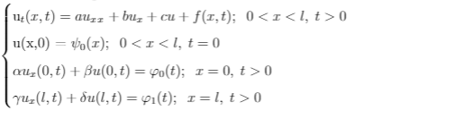
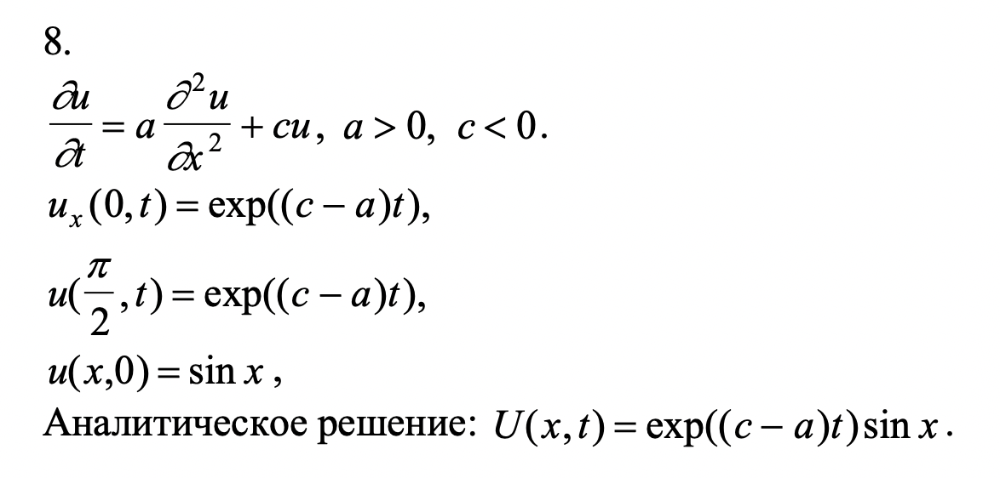

Вариант 8.

Параметры уравнения
a
b
c
α
β
γ
δ
Параметры разбиения
l
T
N
K
Выбор схемы
Явная
Неявная
Кранка - Николсона
Выбор метода аппроксимации
Двухточечная с первым порядком
Двухточечная со вторым порядком
Трёхточечная со вторым порядком
Вычислить
Выбор промежутка времени. t =
0
Отобразить следующий график